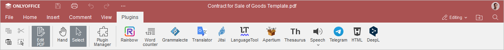
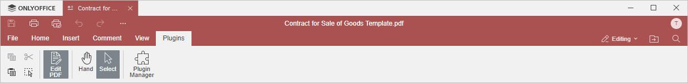

Kartica Dodaci
Kartica Dodaci u PDF Uređivaču omogućava pristup naprednim funkcijama uređivanja koristeći dostupne dodatke nezavisnih proizvođača.
Odgovarajući prozor u Online PDF Uređivaču:

Odgovarajući prozor u Desktop PDF Uređivaču:

Dugme Upravljač dodacima omogućava otvaranje prozora u kojem možete pregledati i upravljati svim instaliranim dodacima, kao i dodavati svoje.
Počevši od ONLYOFFICE Docs verzije 8.2, urednici ne dolaze sa dodacima po defaultu. Dodaci se instaliraju putem Upravljača dodacima.
U vaš dokument možete dodati nekoliko vizuelnih dodataka. Dodaci će biti prikazani kao odgovarajuće ikone na levom panelu.
Za više informacija o dodacima, pogledajte našu API dokumentaciju. Svi postojeći primeri dodataka otvorenog koda dostupni su na GitHub.